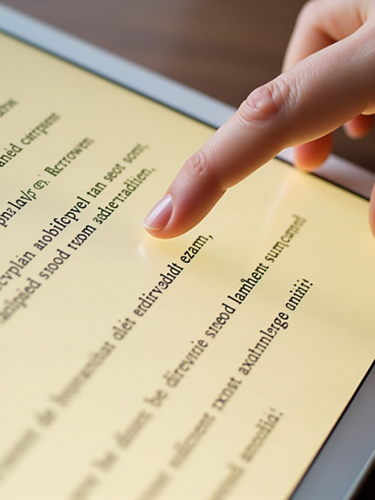

Über uns
Professionelle Sprachmittlung
Seit über einem Jahrzehnt bietet www.textflows.de erstklassige Übersetzungs- und Dolmetscherdienste in sämtlichen Weltsprachen an. Unser Fokus liegt auf der Überwindung sprachlicher und kultureller Barrieren für Privatpersonen, Unternehmen und Institutionen. Wir sind spezialisiert auf schriftliche Übersetzungen und mündliches Dolmetschen in verschiedenen Fachbereichen und Sprachen, darunter Deutsch, Englisch, Georgisch, Türkisch, Arabisch, Französisch, Spanisch, Italienisch, Russisch und viele weitere. Darüber hinaus vermitteln wir auf Anfrage auch ungewöhnliche Sprachkombinationen. Qualität, Vertraulichkeit, Präzision und eine pünktliche Fertigstellung haben bei uns höchste Priorität. Jede Übersetzung und jedes Dolmetschen wird individuell an den Kontext, die Zielgruppe und den kulturellen Hintergrund angepasst. Dank unserer fundierten Berufserfahrung, unseres globalen Netzwerks und unserer interkulturellen Kompetenz gewährleisten wir eine reibungslose und professionelle Kommunikation bei Behörden, Geschäftstreffen, Konferenzen sowie im medizinischen, rechtlichen und privaten Bereich.
Unsere Mission
Unsere Mission bei Textflows ist es, eine präzise, zuverlässige und wirkungsvolle Kommunikation zwischen Sprachen und Kulturen zu ermöglichen. Mit unseren professionellen Übersetzungs- und Dolmetschdienstleistungen unterstützen wir Unternehmen und Privatpersonen dabei, sprachliche Barrieren zu überwinden und ihre Ziele in einem internationalen Umfeld erfolgreich zu erreichen. Qualität, Vertraulichkeit und Professionalität bilden die Grundlage unseres Handelns.
Unsere Vision
Unsere Vision ist es, Textflows als anerkannten, vertrauenswürdigen und zukunftsorientierten Anbieter von Sprachdienstleistungen auf internationaler Ebene zu etablieren. Durch den Einsatz moderner Technologien, fachlicher Expertise und innovativer Sprachlösungen streben wir danach, nachhaltigen Mehrwert zu schaffen und als verlässlicher Partner für mehrsprachige Kommunikation wahrgenommen zu werden.
Unser Team
Sophie Chekurishvili Yildirim
Die staatlich geprüfte Dolmetscherin und Gründerin von Textflows verfügt über langjährige Erfahrung im Bereich Sprachdienstleistungen. Mit einer klaren Vision und ausgeprägter interkultureller Kompetenz gründete sie Textflows mit dem Ziel, professionelle, präzise und zuverlässige Sprachmittlungsdienste auf höchstem Niveau anzubieten.
Als Gründerin legt sie besonderen Wert auf Qualität, Vertraulichkeit und individuelle Lösungen, die exakt auf die Bedürfnisse von Privatpersonen, Unternehmen und Institutionen abgestimmt sind. Durch ihre fachliche Expertise, ihr internationales Netzwerk sowie ihr tiefes Verständnis für sprachliche und kulturelle Zusammenhänge prägt sie maßgeblich die Werte und die strategische Ausrichtung von Textflows.
Unter ihrer Leitung hat sich Textflows als vertrauenswürdiger Partner für mehrsprachige Kommunikation in administrativen, wirtschaftlichen, medizinischen und rechtlichen Bereichen etabliert.